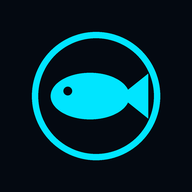

KILÇIK
Kıyıdan balık avı: nerede, saat kaçta, hangi balık.
Ücretsiz · üyelik yok · mağazadan indirme yok
Önce tarayıcıda açın
Bu sayfa başka bir uygulamanın içinde açılmış; buradan simge eklenemez.
Chrome’da açAndroid
Yükleniyor. Birkaç saniye sonra ana ekrandaki KILÇIK simgesine dokunun.
Yükle düğmesi görünmüyorsa (Chrome):
- Sağ üstteki ⋮ simgesine dokunun
- Uygulamayı yükle veya Ana ekrana ekle
- Yükle / Ekle
Samsung İnternet’te: alttaki menü → Sayfayı ekle → Ana ekran.
iPhone: 3 dokunuş
- Paylaş simgesine dokunun
Safari’de alttadır; bazı telefonlarda önce ••• simgesine dokunmak gerekir. - Listeyi yukarı kaydırıp Ana Ekrana Ekle
- Sağ üstte Ekle
“Ana Ekrana Ekle” yoksa sayfa WhatsApp içinde açılmıştır: Safari (pusula) simgesine dokunun veya aşağıdan bağlantıyı kopyalayıp Safari’ye yapıştırın.
Telefonunuzdan açın
Bu sayfayı telefonda açınca kurulum adımları görünür.
Kayıtlarınız yalnızca kendi telefonunuzda durur. Konum izni sorulunca izin verin. Puanlar tahmindir; denizde kendi güvenliğiniz size aittir.